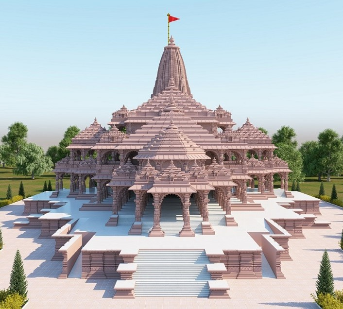
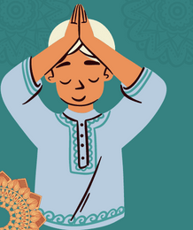
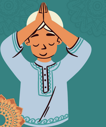
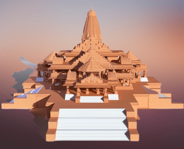

Main Temple
Total Area:2.7 Acres
Total Built-up Area: 57,400 Sq. ft.
Total length of the temple:360 feet
Total width of the temple:235 feet
The total height of the temple including the peak:161 feet
Total number of floors:3
Height of each floor:20 feet
Number of columns in the ground floor of the temple:160
Number of columns in the first floor of the temple:132
Number of columns in the second floor of the temple:74
Number of pedks and pavilions in the temple:5
Number of Gates in the temple:12
Total length of the temple:360 feet
Total width of the temple:235 feet
The total height of the temple including the peak:161 feet
Total number of floors:3
Height of each floor:20 feet
Number of columns in the ground floor of the temple:160
Number of columns in the first floor of the temple:132
Number of columns in the second floor of the temple:74
Number of pedks and pavilions in the temple:5
Number of Gates in the temple:12
The total height of the temple including the peak:161 feet
Total number of floors:3
Height of each floor:20 feet
Number of columns in the ground floor of the temple:160
Number of columns in the first floor of the temple:132
Number of columns in the second floor of the temple:74
Number of pedks and pavilions in the temple:5
Number of Gates in the temple:12
Height of each floor:20 feet
Number of columns in the ground floor of the temple:160
Number of columns in the first floor of the temple:132
Number of columns in the second floor of the temple:74
Number of pedks and pavilions in the temple:5
Number of Gates in the temple:12
Number of columns in the first floor of the temple:132
Number of columns in the second floor of the temple:74
Number of pedks and pavilions in the temple:5
Number of Gates in the temple:12
Number of pedks and pavilions in the temple:5
Number of Gates in the temple:12
.png) 

श्री रामचन्द्राय नमः ||
श्री राम शरणं मम् ||
-
Mental Peace
-
Healthy
-
Strong Physical
-
Happy Mind
Meaning- Regular chanting of this mantra gives strong mental and physical
strength to the native. It helps in staying healthy and keeps the mind happy.
श्रीराम जन्मभूमि तीर्थक्षेत्र
SHRI RAM BIRTH PLACE SACRED PILGRIMAGE REGION
TEMPLE REGION CONSTRUCTION RESOLUTION :: 70 ACRES ::
-
Shri Ram Kund
Yagyashala
(Home of Holy Offering)
-
Karm Kshetra
Anusthaan Mandap
(House of holy Rituals)
-
Hanuman Gadhi
Veer Maruti Vishal Pratima
(Gigantic Statue of Lord Hanuman)
-
Shri Ramlala Purakalik Darshan Mandal
Janmbhoomi Sangrahalay
(For the display of archaeological & historical relic related to Ram's Birth Place) -
Shri Kamm Keerti
Satsang Bhavan Sabhagaar
(House for discourse and mass prayer) -
Guru Vashishtha Peethika
Ved, Puran, Ramayan evam Sanskrit Adhyayan-Anusandhaan Anukshetra
(Center of study for research on Ved, Puran,Ramayan & Sanskrit) -
Bhakti Teela
Special peace zone for deeper meditation
-
Tulsi
Ramlila Center, 360 degree Theather/Open Air Theater
-
Ram Darbaar
Multifunctional/Projection/Lecture & Communication Center
-
Mata Kaushalya Vatsalya Mandap
Exhibition hall, Tableau complex
-
Ramangan
Exclusive Cinema/Television/AV Based Show & Discourse Theater
-
Ramayan
Modern A/C library and Reading Room
-
Maharshi Valmiki
Archives and Research Center
-
Ramashrayam
Multistories boarding, lodging facility & waiting lounge for outstation devotee
-
Shri Dashrath
Adarsh Goshala (Shelter for Cows)
-
Laxman Vatika
Lily-pond and Musical fountains
-
Lav Kush Nikunj
Activities Area for Youth and Children
-
Maryada Khand
Special guests residential Area
(Cottages and Multistory Apartments enclave) -
Bharat Prasaad-Mandap
Canopy Courts for Naivedya/Prasaad/Bhog
(Sanctified Food Offerings)
Distribution & Management along with Sanctified food preparation & Storage facility -
Mata Sita Rasoi Annakshetra
Large food shelter for mass feeding facility for devotee along with mega kitchen, large food grain storage, systematic utensil & cutlery storage and hand-washing facilities
-
Singhdwar ke Sammukh Deepstambh
Lamp tower in front of the Lion Gate Portal
Ram In Ayodhya
Temple Tour
About Temple
Ram Mandir is a Hindu temple that is being built in Ayodhya, Uttar Pradesh, India, at the site of Ram Janmabhoomi, according to the Ramayana the birthplace of Lord Ram.
.png)
Our Pandit
Mahant Nritya Gopal Das is the head of Ayodhya's largest temple, the Mani Ram Das Ki Chavani, and the chief of the Ram Janmabhoomi Nyas and Shri Ram Janmabhoomi Teerth Kshetra.
.png)
Prayers & Timing
In Ramayana the mythical granth of Hindus, it is said that Ram's birthplace is on the banks of the Sarayu River in Ayodhya town
70%
Construction work of Ram temple
70% construction work of Ram temple in Ayodhya has been completed. In 2024, preparations are on to open the Ram temple for devotees

रामायण के प्रसिद्ध पात्र
Dasharatha - दशरथ
दशरथ एक महान और प्रसिद्ध राजा थे, जो त्रेतायुग में आये। वे कोसल राजवंश के अंतर्गत राजा थे। दशरथ का जन्म अयोध्या नगर में हुआ। उनके माता-पिता का नाम ऋष्यरेखा और श्रृंगर था। दशरथ की माता ऋष्यरेखा उनके पिता की दूसरी पत्नी थीं। दशरथ की प्रथम पत्नी का नाम कौशल्या था, जो उनकी पत्नी के रूप में सदैव निर्देशक और सहायक थी
दशरथ का रंग गहरे मिटटी के बराबर सुनहरा था, और उनके बाल मध्यम लंबाई के साथ काले थे। वे बहुत ही शक्तिशाली और ब्राह्मण गुणों से युक्त थे। दशरथ धर्मिक और सामर्थ्यपूर्ण शासक थे, जो अपने राज्य की अच्छी तरह से देखभाल करते थे। वे एक मानवीय राजा थे जिन्होंने न्याय, सच्चाई और धर्म को अपना मूल मंत्र बनाया था।
दशरथ के विद्यालयी शिक्षा का स्तर बहुत ऊँचा था। वे वेद, पुराण और धार्मिक ग्रंथों का अच्छा ज्ञान रखते थे। उन्होंने सभी धर्मों को समान दृष्टि से स्वीकार किया और अपने राज्य की न्यायिक प्रणाली को न्यायपूर्ण और उच्चतम मानकों पर स्थापित किया।
दशरथ एक सामर्थ्यशाली सेनापति भी थे। वे बड़े ही साहसी और पराक्रमी योद्धा थे, जो अपने शत्रुओं को हरा देने के लिए हमेशा तैयार रहते थे। उन्होंने अपनी सेना के साथ कई महत्वपूर्ण युद्धों में भाग लिया और वीरता से वापस आए। दशरथ की सेना का नागरिकों के द्वारा बहुत सम्मान किया जाता था और उन्हें उनके साहस और समर्पण के लिए प्रशंसा मिलती थी।c
दशरथ एक आदर्श पिता भी थे। वे अपने तीन पुत्रों को बहुत प्रेम करते थे और उन्हें सबकुछ प्रदान करने के लिए तत्पर रहते थे। दशरथ के पुत्रों के नाम राम, लक्ष्मण, भरत और शत्रुघ्न थे। वे सभी धर्मात्मा और धर्म के पुजारी थे। दशरथ के प्रति उनके पुत्रों का आदर बहुत गहरा था और वे उनके उच्च संस्कारों को सीखते थे।
दशरथ एक सच्चे और वचनबद्ध दोस्त भी थे। वे अपने मित्रों की सहायता करने में निपुण थे और उन्हें हमेशा समर्थन देते थे। उनकी मित्रता और संगठनशीलता के कारण वे अपने देश में बड़े ही प्रसिद्ध थे।
दशरथ एक सामरिक कला के प्रेमी भी थे। वे धनुर्विद्या और आयुध शस्त्रों में माहिर थे और युद्ध कला के उदात्त संगीत का भी ज्ञान रखते थे। उन्हें शास्त्रों की गहरी ज्ञान थी और वे अपने शिष्यों को भी शिक्षा देते थे। उनकी सामरिक कला में निपुणता के कारण वे आदर्श योद्धा माने जाते थे।
दशरथ एक सामर्थ्यशाली और दायालु राजा थे। वे अपने राज्य के लोगों के प्रति मानवीयता और सद्भावना का पालन करते थे। दशरथ अपने लोगों के लिए निरंतर विकास की योजनाएं बनाते और सुनिश्चित करते थे। वे अपने राज्य की संपत्ति को न्यायपूर्ण और सामर्थ्यपूर्ण तरीके से व्यय करते थे।
एक शांतिप्रिय और धर्माचार्य राजा के रूप में, दशरथ को अपने पुत्र राम के विवाह के लिए स्वयंवर आयोजित करना पड़ा। उन्होंने संपूर्ण राज्य को आमंत्रित किया और अपने राजमहल में एक विशाल सभा स्थापित की। दशरथ के स्वयंवर में विभिन्न राज्यों के राजकुमारों ने भाग लिया और राम ने सीता का चयन किया, जो बाद में उनकी पत्नी बनी।
दशरथ के बारे में कहा जाता है कि वे एक विद्वान्, धर्मात्मा, धैर्यशाली और सदैव न्यायप्रिय राजा थे। उनकी प्रशासनिक क्षमता और वीरता के कारण वे अपने समय के मशहूर और प्रमुख राजाओं में गिने जाते थे। दशरथ की मृत्यु ने राजवंश को भारी नुकसान पहुंचाया और उनके निधन के बाद उनके पुत्र राम को अयोध्या का राजा बनाया गया। दशरथ की साधुपन्थी और न्यायप्रिय व्यक्तित्व ने उन्हें देश और विदेश में विख्यात बनाया।